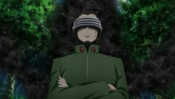
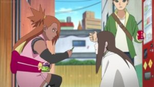
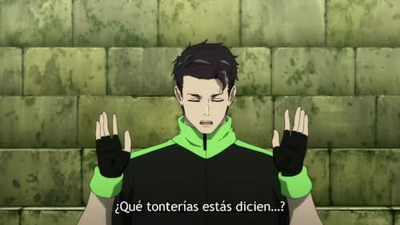
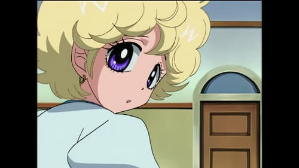
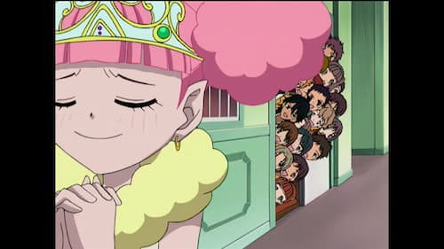
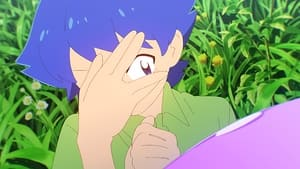

Inicio
Mas Vistos
Peliculas
Ver Anime
Boruto: Naruto Next Generations: 1x228
Boruto Episodio 228 Online
Naruto, Sasuke y Boruto intentan ganar tiempo hasta que desaparezca Isshiki, pero este descubre un modo de dar la vuelta a su situación, al menos parcialmente.
ver Boruto Naruto Next Generations episodio 228 sub español – descargar boruto mega – boruto anime – boruto 132 – boruto manga – boruto sub español
Compartido 2
Facebook
Mas episodios
1-1 Episodio 1
1-2 Episodio 2
1-3 Episodio 3
1-4 Episodio 4
1-5 Episodio 5
1-6 Episodio 6
1-7 Episodio 7
Siguenos
Facebook
Más animes
Tsumasho

tower...

super sugar

super sugar Cap 35

puniru